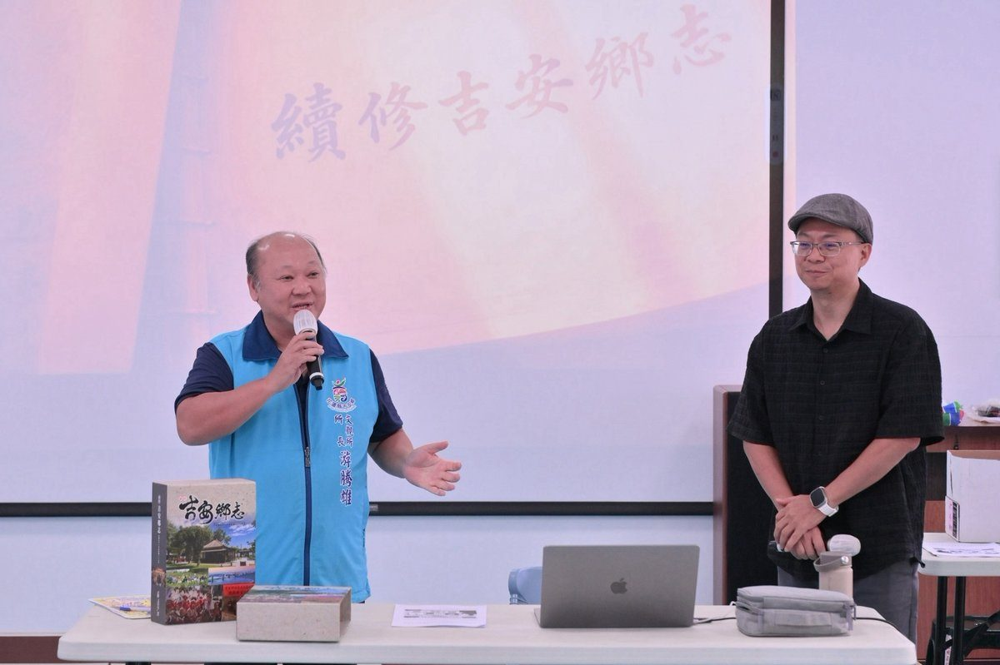

吉安「來去吉野」走讀百年登場 游淑貞盼跨域認識土地

可樂電子報小編/編輯
為推動地方文化永續與社區營造，吉安鄉公所辦理115年度社區營造及村落文化發展計畫「來去吉野—走讀吉安百年時光」，今(2)日下午於好客藝術村盛大舉辦首場「數位增能研習工作坊」，吸引近30位文史工作者、在地學員熱烈參與。吉安鄉長游淑貞親自出席勉勵，期盼學員結合數位科技與實地走讀，在跨領域交流中重新發掘吉野百年風華，進而深化對家鄉土地的認同與記憶傳承。

工作坊特邀國立東華大學臺灣文化學系副教授、《吉安鄉志》續修總編纂郭俊麟擔綱主講。郭俊麟分享指出，吉安鄉公所歷經三年纂修與一年編輯出版，系統性記錄2002年至2024年間的地方發展軌跡，匯整公私部門檔案、統計數據、田野調查及人物訪談，完成高達60萬字、10大篇章的巨著，並收錄26位代表人物。除了發行紙本書籍，更同步推出數位版本、簡明版故事地圖，甚至導入60萬字文本開發「吉安鄉志GPT」及協作式地圖，帶領學員善用先進數位工具整理並詮釋地方記憶。

面對AI數位浪潮，郭俊麟特別提醒學員，人工智慧雖能大幅縮減資料檢索時間，但仍存在局限性與資訊偏差，使用者必須具備嚴謹的查證意識，絕無法完全取代實地觀察與田野踏查的真切感受。因此，課程隨後由吉安國中退休校長田清華帶領學員實地走出戶外，漫步造訪好客藝術村、慶修院及慶豐周邊歷史場域，透過現場導覽、五感體驗與觀察紀錄蒐集第一手文史素材，藉由教育與田野視角的碰撞，具體落實「走入土地、認識家鄉」的探究精神。

吉安鄉長游淑貞強調，吉安鄉作為全台灣首座日本官營移民村「吉野村」的歷史核心，沉澱了豐富的百年遺跡與人文脈絡；繼完成續修鄉志的重大文化工程後，鄉公所進一步推動「來去吉野—走讀吉安百年時光」計畫，期盼匯聚文史工作者、手作職人、在地小農與熱心鄉親齊心投入。吉安鄉公所文觀所表示，本計畫獲文化部與花蓮縣政府補助30萬元、公所自籌10萬元，自115年起推展為期兩年的扎根行動，10月份將陸續推出數位研習、徒步走讀與單車漫遊等多元體驗，讓吉安的百年風華在數位創新與跨世代傳承中持續熠熠生輝。

▶ 延伸觀看
📺 相關報導影片：點此於 YouTube 觀看完整報導